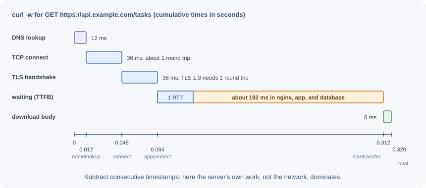

Troubleshooting CPU, Memory, Disk, and Network¶
When the TaskFlow API slows down or starts failing, the server itself is
one of the first suspects and one of the fastest to rule in or out. This
lesson is a working method for that: a one-minute snapshot of the whole
machine, then a focused look at the resource that is short. It covers
load average versus CPU utilization, top, vmstat, and pidstat;
memory as free really reports it, swap, and the OOM killer; disk space,
inodes, deleted-but-open files, and I/O latency; and the network from
listening sockets to DNS, TCP, TLS, and the path between, with ss,
curl, dig, and mtr. It ends with the "too many open files" family
of failures.
Application-level profiling under load (CPU profiles, event-loop lag, slow queries during a load test) is covered in finding bottlenecks; this lesson stays on the host.
Why it matters¶
During an incident, guessing is expensive. Restarting the app, resizing the VM, or blaming the network each takes minutes and destroys evidence, and each is right only some of the time. A few commands answer the real questions within a minute: is a resource saturated, which one, and which process is responsible.
Most host-level incidents are also repeats of a handful of patterns: a disk filled by logs, a memory leak ending in an OOM kill, a single-threaded process pinned at 100% of one core, a slow DNS lookup, a file descriptor limit. Recognizing the pattern from one or two numbers is what separates a ten-minute incident from a two-hour one.
Real-world usage¶
- Netflix: the first 60 seconds. In
Linux Performance Analysis in 60,000 Milliseconds,
Netflix's performance engineering team lists the ten commands they run
first on a misbehaving Linux instance:
uptime,dmesg | tail,vmstat 1,mpstat -P ALL 1,pidstat 1,iostat -xz 1,free -m,sar -n DEV 1,sar -n TCP,ETCP 1, andtop. This lesson's snapshot script is built on that list. - The USE method. Brendan Gregg's USE method checks every resource for utilization, saturation, and errors, which turns "the server is slow" into a short, complete checklist instead of a hunt.
- Linux load averages. Gregg's Linux Load Averages: Solving the Mystery explains that Linux load averages "track not just runnable tasks, but also tasks in the uninterruptible sleep state", so a high load can mean slow disks rather than busy CPUs.
- Google SRE book. The Effective Troubleshooting chapter frames debugging as forming and testing hypotheses, and insists that the first goal is to "make the system work as well as it can under the circumstances" before hunting for the root cause.
- Linux kernel documentation. Pressure stall information reports the share of time tasks were stalled waiting for CPU, memory, or I/O, a direct measure of saturation.
Popular tools and providers: procps (top, vmstat, free),
sysstat (mpstat, pidstat, iostat, sar), htop, iproute2 (ss),
lsof, curl, dig, mtr, and on the platform side the Prometheus node
exporter, Netdata, CloudWatch, and Datadog for the same signals over time.
How it works¶
A method before commands¶
![Diagram: a triage flowchart. Users report slow or failing requests; in the first minute run uptime, dmesg -T piped to tail, and vmstat 1 5. If there are OOM kills or I/O errors in the kernel log, investigate memory or hardware with journalctl -k and systemctl status. Otherwise, if the run queue is above the CPU count or us plus sy is near 100 percent, investigate CPU with top and pidstat, where one core at 100 percent means the event loop is saturated. Otherwise, if wa is high or tasks are blocked, investigate disk with iostat -xz 1, df -h, df -i, and lsof +L1. Otherwise, if si or so stay above 0 for minutes, investigate memory pressure with free -h, swap, MemoryHigh, and leaks. Otherwise, if there are connection errors or DNS, TCP, or TLS is slow, investigate the network with ss -tulpn, curl -w timings, dig, and mtr. Otherwise the problem is inside the app: logs, event-loop delay, and slow queries.](../server-triage-flowchart.svg)
Three habits make host-level debugging fast:
- Stop the bleeding first. If one instance is broken, take it out of the load balancer or restart it after capturing evidence; if the disk is full, free space before investigating why.
- Capture before you change. A snapshot script (below) records the state in a file, so a restart does not erase the answer.
- Work through resources, not hunches. For CPU, memory, disk, and network, ask the USE questions: how busy is it (utilization), is work queueing (saturation), and are there errors?
| Resource | Utilization | Saturation | Errors |
|---|---|---|---|
| CPU | top / mpstat us + sy |
vmstat r above the CPU count; /proc/pressure/cpu |
Rare; kernel log |
| Memory | free -h used versus available |
vmstat si / so; /proc/pressure/memory |
OOM kills in journalctl -k |
| Disk I/O | iostat -xz %util (for spinning or serial devices) |
aqu-sz, await, vmstat b and wa |
I/O errors in the kernel log |
| Disk capacity | df -h, df -i |
n/a | ENOSPC: "No space left on device" |
| Network | sar -n DEV 1 throughput |
TCP retransmits (sar -n TCP,ETCP 1), listen queue overflows |
Connection refused or reset, DNS failures |
The first minute¶
The snapshot uses the Netflix list. mpstat, pidstat, iostat, and
sar come from the sysstat package (sudo apt-get install sysstat);
the rest are installed on Ubuntu Server.
| Command | What it tells you | What bad looks like |
|---|---|---|
uptime |
Load averages over 1, 5, and 15 minutes | Load well above the CPU count, or a 1-minute value far above the 15-minute one (it is getting worse) |
sudo dmesg -T (read the last lines) |
Recent kernel messages | OOM kills, I/O errors, dropped packets |
vmstat 1 5 |
Run queue, blocked tasks, swap, I/O, CPU split | High r, non-zero b, si/so above 0, high wa or st |
mpstat -P ALL 1 |
Per-CPU utilization | One CPU at 100% while others idle: a single-threaded bottleneck |
pidstat 1 |
CPU per process | Which process is busy |
iostat -xz 1 |
Per-device latency, queue, utilization | High r_await/w_await, growing aqu-sz |
free -h |
Memory, including available | available near zero |
sar -n DEV 1 |
Network throughput per interface | Close to the instance's bandwidth limit |
sar -n TCP,ETCP 1 |
Connections and retransmits | Many retransmits |
top |
Everything at once, per process | Confirms the suspect |
The first line of vmstat and iostat output reports averages since
boot; read the following lines, which cover each interval.
CPU: load average is not CPU usage¶
On Linux, the load average counts tasks that are running, waiting to
run, or in uninterruptible sleep (state D, usually waiting for disk
or network storage). The three numbers are exponentially damped averages
with 1, 5, and 15 minute time constants, so a load spike shows up in the
first number before the others. Compare them with the number of CPUs
(nproc):
- Load 7.9 on 2 vCPUs,
vmstatshowsus 85 sy 10: the CPUs are saturated and work is queueing. Find the process withtoporpidstat 1. - Load 7.9 on 2 vCPUs,
vmstatshowsus 5 wa 80andb 6: the CPUs are mostly idle; tasks are stuck waiting for the disk. This is an I/O problem, and adding CPUs would change nothing. - Load 1.1 on 8 vCPUs, the API is slow, and
topshows onenodeprocess at 100%: the machine is 12% busy, but Node.js runs JavaScript on one thread, so that instance is saturated. Add instances (one per core) or move CPU-heavy work to worker threads (worker threads, child processes, and cluster).mpstat -P ALL 1, or pressing1intop, shows the pinned core.
The CPU split in top and vmstat is diagnostic in itself:
| Field | Meaning | When it is high |
|---|---|---|
us |
Running user code | Application work: profile the process |
sy |
Running kernel code | Many system calls, context switches, or network packets |
wa |
Idle while waiting for I/O | Slow or saturated disks |
st |
Time "stolen from this VM by the hypervisor" | The host or instance type is not giving you the CPU you ask for; check the provider's CPU credit or throttling metrics |
Memory: free, available, swap, and the OOM killer¶
![Diagram: two bars for a server with 3.8 GiB of RAM. Healthy: processes use 1.2 GiB, 0.2 GiB of cache cannot be dropped, 2.1 GiB is reclaimable page cache, and 0.3 GiB is free; free -h reports used 1.4 GiB as total minus available, buff/cache 2.3 GiB, free 0.3 GiB, and available 2.4 GiB, which is free plus the reclaimable cache. Under pressure: a leaking process grows to 3.4 GiB, the cache has already been reclaimed, and available falls to about 0.2 GiB; the kernel reclaims cache, then swaps, which shows as si and so in vmstat, and finally the OOM killer ends the process with the highest score.](../memory-free-vs-available.svg)
Linux uses otherwise idle RAM as page cache for file data, so free
is normally small on a healthy server. The column that matters is
available, which the free manual defines as an "Estimation of how
much memory is available for starting new applications, without
swapping": free memory plus cache the kernel can drop. In the procps
version on Ubuntu 26.04, used is calculated as total minus available.
When available memory runs out, the kernel tries, in order, to:
- Reclaim page cache, which costs re-reading files later.
- Swap anonymous memory out, if swap exists.
vmstatshows it as non-zerosi(swapped in) andso(swapped out). A little swap use is harmless; continuoussi/someans the working set no longer fits and everything slows down. - Kill a process. The OOM killer picks the process with the
highest badness score (roughly its share of memory, adjusted by
/proc/<pid>/oom_score_adjfrom -1000 to +1000, where -1000 disables OOM killing for that process; systemd sets it withOOMScoreAdjust=).
There are two kinds of OOM kill, and the kernel log says which:
Out of memory: Killed process ...is the whole machine running out.Memory cgroup out of memory: Killed process ...is one service reaching its ownMemoryMax=. systemd then reports the unit's result asoom-kill, and the rest of the machine is fine.
Two Ubuntu 26.04 details: /tmp is a tmpfs, so large files there use
RAM (they appear in the shared column); and on Ubuntu, reading the
kernel ring buffer with dmesg needs sudo, while journalctl -k reads
the same messages from the journal. For a Node.js process, the RSS
includes the V8 heap plus buffers and native memory; a heap that grows
steadily across garbage collections is a leak, diagnosed with heap
snapshots as described in
errors, debugging, and performance.
Disk: space, inodes, and files that are deleted but still open¶
A full disk breaks more than the app: MongoDB stops accepting writes,
journald and nginx cannot write logs, nginx cannot buffer large request
bodies to temporary files, and apt fails halfway through an upgrade.
Four checks cover nearly every case:
- Space:
df -hper file system. ext4 reserves 5% of blocks for root by default, so that root-owned daemons keep working after ordinary processes can no longer write;df'sAvailcolumn already excludes that reserve. - Inodes:
df -i. Millions of small files (cache entries, session files, mail queues) can exhaust inodes while gigabytes are free, with the same "No space left on device" error. - Where it went:
du -xh -d1 / | sort -hwalks one file system level by level. Usual suspects:/var/log(application files, the journal),/var/lib/docker(images, containers, unrotated container logs), old releases,/var/lib/aptcaches, and core dumps. - Deleted but open: when
dfsays the disk is full butducannot find the space, a process is holding a deleted file open.
![Diagram: after rm /var/log/taskflow/api.log, the directory entry is gone but inode 4711, holding 8.2 GB of data blocks with a link count of 0, is still open as file descriptor 3 by node with PID 4123, which keeps appending, and ls -l /proc/4123/fd/3 shows api.log as deleted. du -sh /var/log reports about 1 GB because it walks directory entries and cannot see a file without a name, while df -h reports 97 percent used because it counts allocated blocks, including inode 4711. Find it with sudo lsof +L1; fix it by restarting the process, making it reopen its log, or truncating through /proc/4123/fd/3; prevent it by logging to stdout or rotating with logrotate, never with a bare rm.](../deleted-but-open-file.svg)
A file's name is only a directory entry pointing at an inode; the
blocks are freed when the last name is removed and the last open
file descriptor is closed. Deleting a log file that a process still
writes to removes the name, so du stops counting it, but the process
keeps the inode alive and growing. lsof +L1 lists open files whose link
count is below one, that is, deleted ones. Restarting the process (or
signalling it to reopen its logs) releases the space; truncating the file
through /proc/<pid>/fd/<n> frees it immediately without a restart.
I/O latency is the other disk problem. iostat -xz 1 reports
r_await and w_await (average milliseconds per request, queue time
included) and aqu-sz (average queue length). %util near 100% means
saturation only for devices that serve one request at a time; for SSDs
and RAID arrays the manual warns it "does not reflect their performance
limits", so trust latency and queue length instead. Cloud volumes also
have provisioned IOPS and throughput limits; when you hit them, latency
rises while %util looks unremarkable.
Network: listening, connecting, resolving, and the path¶
Work from the inside out:
- Is the service listening where you think?
ss -tulpnlists listening TCP and UDP sockets with the owning process. A service bound to127.0.0.1:3001is unreachable from other machines by design; one bound to0.0.0.0is reachable from everywhere the firewall allows. - What are the connections doing?
ss -ssummarizes sockets by state. Thousands ofTIME-WAITsockets are normal on a busy proxy; sockets piling up inCLOSE-WAITmean the local application received the peer's close but never closed its side, which is a bug in the app or a library and eventually exhausts file descriptors. - Refused or timed out? "Connection refused" means a host answered with a reset: nothing listens on that port, or a firewall rejects rather than drops. A timeout means packets disappear: a firewall or security group drops them, routing is wrong, or the host is down.
- Where does the time go?
curl -wprints cumulative timestamps for each phase of a request.

Subtracting consecutive timestamps separates DNS, TCP, TLS, server time, and transfer. TCP's handshake costs one round trip and TLS 1.3 one more, so both should be close to the ping time; if the wait for the first byte dominates, as here, look at the server, its logs, and its queries rather than the network.
- Is DNS the problem? On Ubuntu, applications ask the
systemd-resolved stub at
127.0.0.53, which forwards to the configured upstream servers;resolvectl statusshows which.digqueries a server directly: compare the stub with a public resolver, and use+traceto follow delegation from the root. The resolution process itself is covered in DNS. - Where on the path?
mtrcombinestracerouteandping, showing loss and latency per hop over many cycles. Loss at an intermediate hop that does not continue to later hops is usually a router rate-limiting its own ICMP replies, not real loss; loss that starts at a hop and persists to the destination is real.mtr -T -P 443probes with TCP to the port you care about, which survives firewalls that drop ICMP (see ICMP).
Too many open files¶
Every socket, file, and pipe a process holds is a file descriptor,
and each process has a soft and a hard limit on how many it may hold
(RLIMIT_NOFILE). Errors look like EMFILE: too many open files in
Node.js or socket() failed (24: Too many open files) in nginx.
- Read the limit that applies.
ulimit -nshows only your shell's limit. For a service, read/proc/<pid>/limits, which shows the soft limit, hard limit, and units for each resource. - Count the descriptors.
ls /proc/<pid>/fd | wc -l, watched over time. A count that only grows is a leak (often sockets left inCLOSE-WAIT), and raising the limit only delays the failure. - Raise it at the right layer. systemd's default is
1024:524288(soft:hard) for services. Node.js raises its own soft limit to the hard limit at startup, so a Node.js service mostly fails only when the hard limit is low (set withLimitNOFILE=) or there is a leak. nginx does not do this: itsworker_connections(768 in Ubuntu'snginx.conf) counts both client and upstream connections, and its open-file limit is raised withworker_rlimit_nofile. When workers run out of connection slots, nginx logs "worker_connections are not enough". - System-wide limits are rarely the cause on modern kernels:
/proc/sys/fs/file-nrshows allocated handles againstfs.file-max, andfs.nr_open(default 1048576) caps how high any process's limit can be raised.
When to use and when not to use¶
| Symptom | Start with | Then |
|---|---|---|
| Everything is slow | uptime, vmstat 1 5 |
Follow the flowchart |
| One API endpoint is slow | Request logs with timings, curl -w |
Finding bottlenecks and query profiling |
| The service keeps restarting | systemctl status, journalctl -u ... -b |
Result oom-kill, exit codes, start limit |
| "No space left on device" | df -h, df -i |
du, lsof +L1, journal and Docker cleanup |
| Clients cannot connect | ss -tulpn on the server, curl -v from the client |
Firewall and security group rules, DNS |
| Intermittent timeouts to an external service | curl -w timings, dig, mtr -T |
Retries and timeouts in the app |
Host tools show the present moment. For "why was it slow at 03:00
yesterday", you need metrics collected over time (node exporter,
CloudWatch, or similar), as described in
metrics and dashboards,
and sar's own history once the sysstat collector is enabled.
Practical examples¶
A one-minute snapshot script¶
#!/usr/bin/env bash
# /usr/local/sbin/snapshot: capture the server's state to a file before changing anything
set -u
out="/var/tmp/snapshot-$(hostname)-$(date -u +%Y%m%dT%H%M%SZ).txt"
{
echo "== uptime"; uptime
echo "== dmesg (tail)"; dmesg -T | tail -n 25
echo "== vmstat 1 5"; vmstat 1 5
echo "== mpstat"; mpstat -P ALL 1 3
echo "== pidstat"; pidstat 1 3
echo "== iostat"; iostat -xz 1 3
echo "== free"; free -h
echo "== pressure"; grep -H . /proc/pressure/* 2>/dev/null
echo "== df"; df -hT -x tmpfs -x devtmpfs; df -i -x tmpfs -x devtmpfs
echo "== sockets"; ss -s; ss -tulpn
echo "== top"; top -b -n 1 | head -n 25
echo "== failed units"; systemctl --failed --no-pager
} > "$out" 2>&1
echo "saved $out"
Run it with sudo as the first thing in an incident and attach the file
to the incident record. /var/tmp survives reboots, unlike /tmp on
Ubuntu 26.04.
Reading vmstat¶
vmstat 1 5
Example output on a 2-vCPU server that is waiting on its disk:
procs -----------memory---------- ---swap-- -----io---- -system-- ---------cpu---------
r b swpd free buff cache si so bi bo in cs us sy id wa st gu
1 0 0 312840 61200 2398112 0 0 35 220 410 690 4 2 93 1 0 0
0 6 0 309112 61204 2398530 0 0 18432 9210 1890 2410 3 4 12 81 0 0
1 5 0 306904 61210 2399010 0 0 17920 8800 1822 2302 5 3 10 82 0 0
0 7 0 305760 61212 2399420 0 0 19104 9312 1950 2501 2 4 9 85 0 0
2 6 0 304120 61218 2399808 0 0 18560 9001 1875 2390 4 3 11 82 0 0
Ignore the first line (averages since boot). Then: b 5 to 7 tasks
blocked, wa above 80%, heavy bi/bo, and si/so at zero. The
disk is the bottleneck, not CPU or memory; iostat -xz 1 and pidstat -d
1 (I/O per process) show which device and which process.
Confirming an OOM kill¶
# Kernel messages about OOM kills today (the journal keeps them across reboots)
journalctl -k --since today -g 'Out of memory|oom-kill|invoked oom-killer'
# Did systemd see it for this unit, and how often has it restarted?
systemctl show taskflow-api@3001 -p Result -p NRestarts
Example output:
Nov 13 07:41:07 taskflow-app-1 kernel: node invoked oom-killer: gfp_mask=0xcc0(GFP_KERNEL), order=0, oom_score_adj=0
Nov 13 07:41:08 taskflow-app-1 kernel: Memory cgroup out of memory: Killed process 4123 (node) total-vm:22941268kB, anon-rss:705312kB, file-rss:51200kB, shmem-rss:0kB, UID:998 pgtables:3104kB oom_score_adj:0
Result=oom-kill
NRestarts=3
"Memory cgroup out of memory" and Result=oom-kill mean the instance hit
its own MemoryMax=; the machine as a whole was fine. A large
total-vm is normal for V8 (reserved address space); anon-rss is the
memory it actually used.
Finding what fills the disk¶
df -hT -x tmpfs -x devtmpfs # which file system is full
df -i -x tmpfs -x devtmpfs # or out of inodes?
sudo du -xh -d1 / 2>/dev/null | sort -h | tail -n 10
sudo du -xh -d1 /var 2>/dev/null | sort -h | tail -n 10
# The usual suspects
sudo journalctl --disk-usage
sudo ls -lt /var/lib/systemd/coredump/ 2>/dev/null | head
ls -1t /srv/taskflow/releases/ | wc -l
docker system df 2>/dev/null
# Deleted files still held open
sudo lsof +L1
Example output of lsof +L1:
COMMAND PID USER FD TYPE DEVICE SIZE/OFF NLINK NODE NAME
node 4123 taskflow 3w REG 259,1 8804682752 0 4711 /var/log/taskflow/api.log (deleted)
# Free the space now, without restarting: truncate the deleted file through the open descriptor
sudo truncate -s 0 /proc/4123/fd/3
# Then fix the cause: log to stdout and let journald or logrotate handle files
NLINK 0 means no directory entry points at the file any more; FD 3w
is descriptor 3, open for writing. After truncation df shows the space
again, and the process keeps writing at its current offset, so the file
may later look sparse; restarting the process is the clean end state.
Who is listening, and who is connected¶
# Listening sockets with their processes
sudo ss -tulpn
# Socket counts by state, and established connections to MongoDB
ss -s
ss -tn state established '( dport = :27017 )'
# Connections the app has not closed (a growing count is a leak)
ss -tn state close-wait | wc -l
Example output of ss -tulpn (IPv6 listeners trimmed):
Netid State Recv-Q Send-Q Local Address:Port Peer Address:Port Process
udp UNCONN 0 0 127.0.0.54:53 0.0.0.0:* users:(("systemd-resolve",pid=612,fd=16))
udp UNCONN 0 0 127.0.0.53%lo:53 0.0.0.0:* users:(("systemd-resolve",pid=612,fd=14))
tcp LISTEN 0 511 0.0.0.0:443 0.0.0.0:* users:(("nginx",pid=1180,fd=8),("nginx",pid=1179,fd=8))
tcp LISTEN 0 511 0.0.0.0:80 0.0.0.0:* users:(("nginx",pid=1180,fd=6),("nginx",pid=1179,fd=6))
tcp LISTEN 0 4096 0.0.0.0:22 0.0.0.0:* users:(("sshd",pid=938,fd=3),("systemd",pid=1,fd=86))
tcp LISTEN 0 511 127.0.0.1:3001 0.0.0.0:* users:(("node",pid=41873,fd=21))
tcp LISTEN 0 511 127.0.0.1:3002 0.0.0.0:* users:(("node",pid=41902,fd=21))
The app listens only on loopback, nginx on all interfaces, and port 22 is
held by systemd itself (socket activation) as well as sshd. For
listening sockets, Send-Q shows the backlog limit and Recv-Q the
number of connections waiting to be accepted; a Recv-Q near the limit
means the process is not accepting fast enough.
Timing an HTTPS request¶
# curl-format.txt: one line per phase, cumulative seconds since the request started
namelookup: %{time_namelookup}\n
connect: %{time_connect}\n
appconnect: %{time_appconnect}\n
starttransfer: %{time_starttransfer}\n
total: %{time_total}\n
code: %{http_code} remote: %{remote_ip}\n
curl -s -o /dev/null -w "@curl-format.txt" https://api.example.com/tasks
# Bypass DNS to test one specific server behind the name
curl -s -o /dev/null -w "@curl-format.txt" --resolve api.example.com:443:203.0.113.10 \
https://api.example.com/tasks
# Every step of the conversation: DNS answer, TCP, TLS certificate, request and response headers
curl -v https://api.example.com/readyz
Example output of the first command:
namelookup: 0.012021
connect: 0.048113
appconnect: 0.084220
starttransfer: 0.312456
total: 0.320030
code: 200 remote: 203.0.113.10
DNS took 12 ms, TCP 36 ms, TLS 36 ms, and the server about 190 ms after
subtracting one round trip for the request itself. --resolve pins the
name to an address, which tests one server behind a load balancer and
rules DNS out of the measurement.
DNS checks¶
# What the system resolver returns, and which upstream servers it uses
resolvectl query api.example.com
resolvectl status | grep -E 'Current DNS Server|DNS Servers'
# Ask specific resolvers directly and compare
dig +short api.example.com A
dig +short @1.1.1.1 api.example.com A
dig +noall +answer api.example.com A # includes the remaining TTL
# Follow delegation from the root servers (useful right after DNS changes)
dig +trace api.example.com
If the stub and a public resolver disagree right after a change, cached
answers have not expired yet; the TTL in +noall +answer output tells you
for how much longer. DNS changes and migrations are covered in
DNS migrations and troubleshooting.
Path checks with mtr¶
# 50 cycles, wide report, no DNS lookups for hop names
mtr -rwc 50 -n mongo.internal.example.com
# TCP SYN probes to port 443, for paths that drop ICMP
mtr -rwc 50 -T -P 443 api.example.com
Example output:
HOST: taskflow-app-1 Loss% Snt Last Avg Best Wrst StDev
1.|-- 10.0.2.1 0.0% 50 0.3 0.3 0.2 0.6 0.1
2.|-- 198.51.100.1 40.0% 50 1.1 1.2 0.9 2.0 0.2
3.|-- 198.51.100.33 0.0% 50 1.4 1.5 1.2 2.3 0.2
4.|-- 203.0.113.10 0.0% 50 1.8 1.9 1.6 2.6 0.2
The 40% loss at hop 2 does not continue to hops 3 and 4, so it is that router limiting its own replies, not packet loss on the path.
Checking file descriptor limits and usage¶
pid=$(systemctl show -p MainPID --value taskflow-api@3001)
grep 'open files' /proc/$pid/limits # soft and hard limit for this process
sudo ls /proc/$pid/fd | wc -l # descriptors in use right now
cat /proc/sys/fs/file-nr # system-wide: allocated, unused, maximum
# What kinds of descriptors? (sockets, regular files, pipes)
sudo lsof -p "$pid" | awk 'NR > 1 { print $5 }' | sort | uniq -c | sort -rn
Example output of the first two commands:
Max open files 65536 65536 files
1873
If the count climbs steadily between samples while traffic is flat,
something is leaking; ss -tnp | grep "pid=$pid" shows whether the
descriptors are sockets and to where.
Best practices¶
- Capture a snapshot before restarting or resizing anything.
- Read the kernel log and
vmstatfirst; they rule whole resources in or out. - Compare load with the CPU count, and always look at the CPU split
(
us,sy,wa,st) and per-core usage. - Judge memory by
available, swap activity, and OOM messages, never byfree. - Alert on disk usage and inode usage well before 100%, and keep logs bounded (journald limits, logrotate, Docker log options).
- Never delete a log file a process has open; rotate it or truncate it.
- Time network requests by phase with
curl -wbefore blaming "the network". - Treat a steadily growing descriptor count as a leak, not a limit problem.
- Install
sysstatand a metrics agent before you need them; history answers questions that a live view cannot.
In production¶
- Load average of 12 on a 4-vCPU server, but CPU is mostly idle.
Detect:
vmstatshows highwa, non-zerob;iostat -xzshowsw_awaitin the hundreds of milliseconds. Cause: the volume hit its IOPS or throughput limit, often during a backup or log burst. Fix: find the process withpidstat -d 1, move heavy jobs off peak, or provision a faster volume. - The API is slow while the server shows 13% CPU.
Detect:
topshows onenodeprocess at about 100%;mpstat -P ALLshows one core pegged. Cause: the single JavaScript thread of one instance is saturated (a synchronous loop, JSON parsing of a huge payload, or simply too little capacity). Fix: profile it, move CPU work to worker threads, and run one instance per core. - An instance dies every few hours.
Detect:
Result=oom-killand "Memory cgroup out of memory" injournalctl -k. Cause: the process grows until it reachesMemoryMax=, usually a leak. Fix: keep the limit (it protects the rest of the server), take heap snapshots, and fix the leak. - "No space left on device", but
dufinds only a few gigabytes. Detect:df -hshows 100% used;lsof +L1lists a large deleted file. Cause: someone deleted a log the app still had open. Fix: truncate it through/proc/<pid>/fd/<n>or restart the process, then use proper log rotation. - "No space left on device" with plenty of free space.
Detect:
df -ishows 100% inode use. Cause: millions of small files, such as a cache directory nobody prunes. Fix: delete the files (or the directory), and add expiry to whatever creates them. - Requests to an external API intermittently take 5 seconds longer.
Detect:
curl -wshowsnamelookupnear 5 s on some runs. Cause: one configured DNS server times out and the resolver waits before trying the next. Fix: checkresolvectl status, remove or fix the bad server, and give app HTTP clients sensible timeouts. - Users get intermittent "connection reset" errors and the app logs
EMFILE. Detect: the descriptor count in
/proc/<pid>/fdis at the limit;ss -tn state close-waitshows thousands of sockets. Cause: the app leaks sockets that peers already closed. Fix: find the code path that never closes (often an HTTP client without timeouts), and only then consider raisingLimitNOFILE=.
Important terminology¶
- Load average: Exponentially damped averages of runnable plus uninterruptible tasks over 1, 5, and 15 minutes.
- Uninterruptible sleep (D state): A task waiting in the kernel, usually for I/O, that cannot be interrupted by signals.
- iowait (wa): CPU time spent idle while I/O is outstanding.
- Steal time (st): Time the hypervisor gave your vCPU's turn to someone else.
- Page cache: File data cached in RAM; reclaimable when memory is needed.
- Available memory: The kernel's estimate of memory usable for new work without swapping.
- OOM killer: The kernel mechanism that kills a process when memory cannot be reclaimed; global or per cgroup.
- Inode: The file system object that holds a file's metadata and data blocks; names are directory entries pointing to it.
- File descriptor: A process's handle to an open file, socket, or pipe.
- CLOSE-WAIT: The TCP state of a socket whose peer has closed while the local application has not.
- PSI (pressure stall information): Kernel counters of time lost to CPU, memory, and I/O contention.
- USE method: Checking utilization, saturation, and errors for every resource.
Common mistakes and misconceptions¶
- Reading load average as CPU usage, or comparing it without knowing the CPU count.
- Panicking at a small
freenumber whileavailableis large. - Restarting the app first and losing the evidence.
- Deleting a large log file to free space while the writer is running.
- Raising
LimitNOFILEto hide a descriptor leak. - Trusting
%utilon SSDs and cloud volumes as a saturation measure. - Treating loss at a single intermediate
mtrhop as packet loss. - Running
ulimit -nin a shell and assuming a service has the same limit. - Blaming the network without measuring DNS, TCP, TLS, and server time separately.
Revision questions¶
- Why can a server with a load average of 8 on 4 CPUs have mostly idle
CPUs, and which two numbers in
vmstatprove it? free -hshows 0.2 GiB free and 2.6 GiB available on a 4 GiB server. Is it short of memory? What would make you say yes?- What is the difference between "Out of memory: Killed process" and "Memory cgroup out of memory: Killed process", and what does each tell you to fix?
dfreports 97% used butduadds up to 30%. Give the most likely cause, the command that proves it, and two ways to release the space.curl -wshows namelookup 0.004, connect 0.110, appconnect 0.215, starttransfer 0.330, total 0.335. How long did each phase take, and where would you look first? (DNS 4 ms; TCP 106 ms; TLS 105 ms; first byte 115 ms after TLS; transfer 5 ms. TCP and TLS each cost about one round trip of roughly 105 ms, so the client is far from the server; the server's own time is small. Look at geography: a CDN or a closer region, not the app.)- Why does a Node.js service rarely hit the 1024 soft file limit under systemd, while nginx can?
- In
mtr, hop 3 shows 30% loss and hops 4 to 8 show 0%. Is there packet loss on the path? - What does a growing number of
CLOSE-WAITsockets tell you about the application?